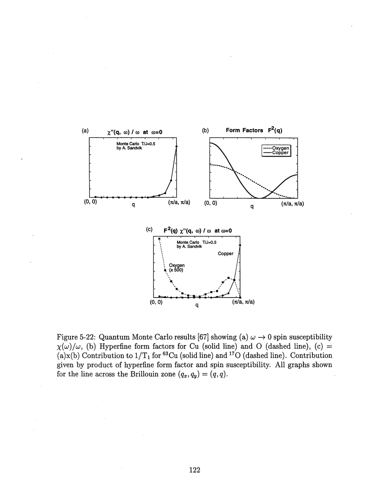
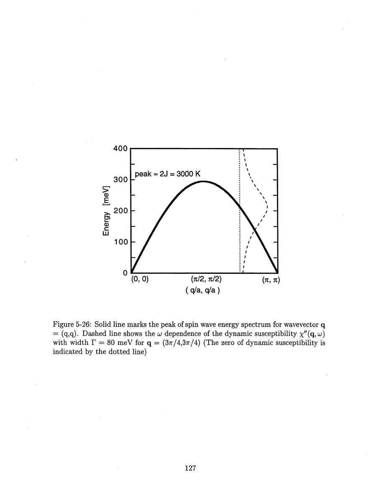
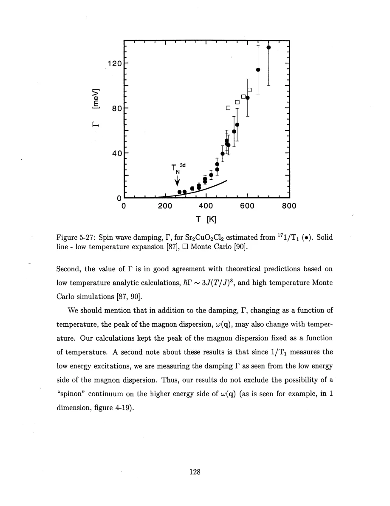

Thurber · supplied source 1999 · chapter unit
Oxygen relaxation and the lifetime of short-wavelength spin waves
Use a filtered spectral-tail model and state its assumptions; the result is an effective magnon damping, not direct high-energy spectroscopy.
The question: How can a low-energy nuclear measurement constrain broadening of a much higher-energy magnetic excitation?
Before you start: the terms you need
- Spin-1/2 Heisenberg antiferromagnet: neighboring electron spins interact through J Sᵢ·Sⱼ with J>0.
- Hyperfine coupling: the electronic spin polarization produces a local magnetic field at a nucleus.
- Wave vector q: distinguishes uniform spin fluctuations near q=0 from staggered fluctuations near the antiferromagnetic vector Q.
- Correlation length ξ: a distance over which staggered electron-spin correlations remain appreciable.
- NMR/NQR: applied-field magnetic resonance versus resonance in the electric field gradient with no applied static field.
- Historical scope: these are experiments and interpretations reported in the supplied 1999 thesis, not a current review of quantum-spin transport.
See → explain → check
Follow the idea in 3 pictures.
Picture 1 / 3
Cancellation does not reduce the plane to one q point
Look for: Midpoint oxygen removes the exact Q mode but retains many noncritical momenta.
Swipe across the picture to read every label, or enlarge it below.
- Cu
- Midpoint O
- Uniform fields add
- Staggered fields cancel
Teaching schematic. Real-space illustration of the filter only. Short-wavelength momenta between q=0 and Q still contribute to the two-dimensional integral.
Planar oxygen is not simply a q=0 detector.
Check the original: PDF p. 121 · PDF p. 122 · PDF p. 123 · PDF p. 126
Picture 2 / 3
A tail connects the energy scales
Look for: A high-energy peak with finite width supplies a low-energy tail; oxygen weights that tail.
Swipe across the picture to read every label, or enlarge it below.
- Magnon energy ω(q)
- Finite width Γ
- Low-energy tail
- Oxygen 1/(T₁T)
Teaching schematic. Conceptual energy-scale flow; the actual frequency profiles are illustrated in source Fig.5-26. No synthetic measured spectrum is drawn.
The linewidth inference requires a spectral model.
Check the original: PDF p. 123 · PDF p. 124 · PDF p. 126 · PDF p. 127
Picture 3 / 3
Keep the conclusion narrower than the inversion
Look for: Compare observed relaxation, assumed line shape and the physical implication of small damping.
Swipe across the picture to read every label, or enlarge it below.
- Measured oxygen rate
- Damped-magnon model
- Γ below magnon scale
Teaching schematic. The inferred width is effective and model dependent. High-energy continuum weight and a temperature-dependent dispersion are not excluded.
Long-lived short-wavelength modes can coexist with no long-range order.
Check the original: PDF p. 126 · PDF p. 128 · PDF p. 133
Explain it back.
Try answering aloud before opening the explanation.
Why can oxygen relaxation increase when a magnon peak broadens, even though NMR is far below the peak?
The broader peak supplies more spectral tail at the nuclear frequency. The site-filtered low-energy response grows under the stated damped-line model.
Does the damping extraction rule out spinons or an additional high-energy continuum?
No. It samples the low-energy side of the spectrum and assumes a spectral representation there. The thesis explicitly leaves high-energy continuum weight open.
Go deeper Follow the full argument
Filtering opens a different part of momentum space
Copper relaxation in the plane is dominated by slow staggered fluctuations near Q. Midpoint oxygen cancels the exact staggered mode and strongly suppresses the critical contribution near it. The remaining oxygen momentum sum need not be dominated only by q≈0. A two-dimensional Brillouin zone contains a large region of short-wavelength fluctuations between its special points, and the thesis uses that phase space to study spin-wave excitations. Figure 5-22 makes the argument in three parts: the electronic low-energy response, the hyperfine weights, and their products. Its oxygen curve is multiplied by 500 for visibility; the plotted heights must not be compared as unscaled oxygen and copper amplitudes. Spin-wave expansions, Monte Carlo and high-temperature series supply different checks in their own regimes. A low-order analytic form valid for TN<T≪J should not be extrapolated across the entire figure merely because a line is drawn on it.
The width creates a measurable low-energy tail
The NMR resonance energy is tiny compared with the hundreds-of-meV spin-wave scale. A finite-width spin-wave peak nevertheless contributes a tail to the low-energy dissipative susceptibility. In the model used here, increasing the width Γ increases oxygen 1/(T₁T) for the short-wavelength sector. The inference combines a damped spectral line shape, a static momentum susceptibility normalized by the uniform response, and a damping taken nearly momentum independent over most of the zone. Near Q the model is joined to the critical scaling form; near q=0 a small sector is neglected because the measured oxygen rates at 9 and 14.1 T do not show a detected enhancement in that comparison. Numerical estimates bound the omitted contribution, rather than make it identically zero. This is a constrained inversion from one low-energy integrated response, not measurement of Γ at every q.
PDF p. 123 · PDF p. 124 · PDF p. 125 · PDF p. 126 · PDF p. 127
What the inferred lifetime does and does not establish
The extracted damping increases strongly with temperature but stays below the characteristic high-energy spin-wave scale in the region emphasized by Thurber. That supports recognizable short-wavelength magnons with finite lifetimes above three-dimensional order. The low-temperature analytic expectation has Γ growing roughly as T³, while the numerical comparison extends the discussion to higher temperatures. The absolute extracted width depends on spectral shape: a squared-Lorentzian alternative changes low-temperature estimates substantially, by up to about a factor of three, while leaving the broader physical conclusion. The calculation also holds the dispersion fixed with temperature. Because the measurement looks at the low-energy side, a continuum at higher energies is not excluded. For lightly doped LSCO, planar oxygen relaxation adds an approximately weakly temperature-dependent contribution. A rigid-band/Stoner picture suggests electron-hole excitations, but their overlap with spin-wave dispersion can renormalize the damping. The proposed link of damping to inverse correlation length remains a speculation, not a measured universal formula.
PDF p. 126 · PDF p. 128 · PDF p. 129 · PDF p. 130 · PDF p. 131 · PDF p. 132 · PDF p. 133
Translate the mathematics Essential equations and their meaning
R_O/T ∝ Γeff
Symbols: R_O: oxygen magnetic relaxation rate; Γeff: momentum-weighted short-wavelength damping in the chosen model.
Proportionality within the spectral-tail analysis after fixing susceptibility, dispersion and momentum cutoffs. It is not a model-free conversion.
ℏΓ ≈ 3J (kBT/J)³
Symbols: Γ: angular-frequency damping; J: exchange energy; kBT: thermal energy.
Low-temperature analytical comparison reported in the thesis; higher-order and finite-temperature corrections limit extrapolation.
FO(q)=2C cos(qbond a/2)
Symbols: qbond: momentum component along the Cu–O–Cu bond; a: Cu spacing; C: transferred coupling.
Exact midpoint cancellation at Q does not imply zero response throughout a finite momentum neighborhood.
Read the evidence Guided original source pages

PDF p. 122

PDF p. 127

PDF p. 128
What the evidence supports—and where it stops
- Effective Γ depends on momentum cutoffs, assumed spectral shape and the fixed dispersion.
- The small near-uniform contribution is neglected within estimated errors, not proven absent at every frequency.
- The lightly doped comparison uses different materials and model interpretations; it does not establish a rigid-band or universal damping mechanism.
Source version, reading coverage and preservation
Read all extracted substantive text on one-based PDF pages 14–204, including chapters 1–8 and appendices A–C; checked the title and abstract and visually inspected 66 full rendered pages for cited figures, formulas, tensor conventions and extraction ambiguities. PDF page numbers match the printed body page numbers.
Reviewed body pages: 14, 15, 16, 17, 18, 19, 20, 21, 22, 23, 24, 25, 26, 27, 28, 29, 30, 31, 32, 33, 34, 35, 36, 37, 38, 39, 40, 41, 42, 43, 44, 45, 46, 47, 48, 49, 50, 51, 52, 53, 54, 55, 56, 57, 58, 59, 60, 61, 62, 63, 64, 65, 66, 67, 68, 69, 70, 71, 72, 73, 74, 75, 76, 77, 78, 79, 80, 81, 82, 83, 84, 85, 86, 87, 88, 89, 90, 91, 92, 93, 94, 95, 96, 97, 98, 99, 100, 101, 102, 103, 104, 105, 106, 107, 108, 109, 110, 111, 112, 113, 114, 115, 116, 117, 118, 119, 120, 121, 122, 123, 124, 125, 126, 127, 128, 129, 130, 131, 132, 133, 134, 135, 136, 137, 138, 139, 140, 141, 142, 143, 144, 145, 146, 147, 148, 149, 150, 151, 152, 153, 154, 155, 156, 157, 158, 159, 160, 161, 162, 163, 164, 165, 166, 167, 168, 169, 170, 171, 172, 173, 174, 175, 176, 177, 178, 179, 180, 181, 182, 183, 184, 185, 186, 187, 188, 189, 190, 191, 192, 193, 194, 195, 196, 197, 198, 199, 200, 201, 202, 203, 204. Bibliography pages 205–212 were not independently verified against the cited external works. The guide explains final results and assumptions rather than reproducing every algebraic step, electronics part number or data point. Remaining rendered pages not listed in the private review were not claimed as visually read.
Source SHA-256: aca6c34f95675f0fb188d45f9148bacce2e832f0956949025eae42f1e1abf618. Original file bytes preserved locally, and in this room’s original download.
Thesis - Thurber - 1999 - O and Cu NMR spin dynamics in low dimensional antiferromagnets.pdf